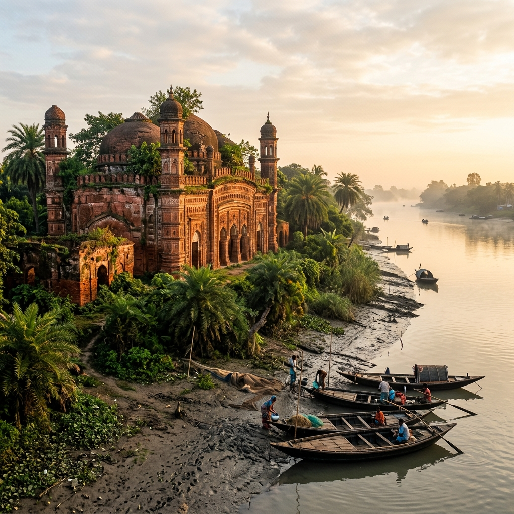

Satgaon Ancient Port Explorer
Journey into the heart of Saptagram, the legendary river port of Bengal. Discover the history of the Saraswati River trade routes, fine muslin and silk commerce, and the rise and fall of the Delhi Sultanate's administrative hub.
Bengal's Medieval Capital and Mint Town
Saptagram, meaning "Seven Villages" (comprising Bansberia, Kristapur, Basudebpur, Nityanandapur, Sibpur, Sambachora, and Baladghati), rose to prominence in the early 14th century. Conquered by the Delhi Sultanate forces, it quickly became the primary administrative capital and royal mint town of southern Bengal.
Under the independent Bengal Sultanate rulers like Shamsuddin Ilyas Shah, Saptagram flourished as a hub of wealth. Its mint produced silver coins that circulated throughout the Indian Ocean networks, representing the sovereign economic clout of Bengal's rulers and attracting traders from Venice, Persia, China, and Arabia.
🕌 Sultanate Heritage
- Seven Villages: Integrated urban center located on the banks of the Saraswati River.
- Royal Mint: Issued sovereign silver coinage, establishing Saptagram as Bengal's prime financial base.
- Terracotta Art: Adorned with beautiful brick architecture, visible in the ruins of the 1529 Saptagram Mosque.
The River Channel That Built an Empire
Saptagram's geography was defined by the Saraswati River, a massive distributary of the Ganges that once ran deep and wide.
Deep-Water Estuary
During the medieval era, the Saraswati River carried high-volume currents, allowing heavy ocean-going merchant vessels to sail 100 miles inland directly from the Bay of Bengal.
Bengal River Craft
A variety of flat-bottomed wooden cargo boats (like Patia, Bajra, and Dinghy) connected Satgaon to Bengal's inland agricultural heartlands, transporting cargo day and night.
Bay of Bengal Trade
Served as the primary gateway connecting inland Bengal to Malacca, Sumatra, Ceylon, the Maldives, and the ports of Gujarat and the Persian Gulf.
✨ "Porto Grande" Exports
- Fine Muslin: Legendary hand-woven sheer cotton fabric highly prized by European and Middle-Eastern royalty.
- Bengal Silk: Premium raw silk and embroidered textiles shipped to international markets.
- Agricultural Commodities: Massive quantities of high-grade rice, cane sugar, and long-shelf-life betel leaves.
The Wealth of Bengal's Golden Market
Portuguese merchants, arriving in Bengal in the early 16th century, were amazed by Saptagram's commercial activity. They named it **Porto Grande** (the Great Port) to distinguish it from Chittagong (Porto Pequeno).
Satgaon's markets traded in diverse commodities. In exchange for silver and gold bullion, horses, and spices, Bengal exported cotton fabrics, raw silk, sugar, rice, and paper. This immense trade volume brought incredible prosperity, creating a wealthy merchant elite and a high-status cultural environment in medieval Bengal.
Chronology of Saptagram Port
From a thriving medieval river metropolis to a quiet archaeological site.
Sultanate Conquest & Rise
Saptagram is integrated into the Delhi Sultanate. Its strategic river location makes it the administrative and mint capital of South Bengal.
Portuguese Arrival
Portuguese merchants establish a factory in Saptagram, describing it as the richest port in Bengal with unparalleled trade volumes.
The Silting of the Saraswati
Tectonic shifts and natural changes in the Ganges course reduce the flow of the Saraswati River. Silt accumulates rapidly, blocking larger vessels.
Hooghly Takes Over
The Portuguese officially shift their primary trading operations to nearby Hooghly Port. Saptagram's shipping channels dry up completely, leaving it landlocked.
Saptagram Archeology and Heritage
Take a look at the historical relics, structural ruins, and river boats of Saptagram.



📚 References & Further Reading
- Sarkar, Jadunath (1948). The History of Bengal, Vol II: Muslim Period. University of Dacca.
- Pires, Tomé (1515). The Suma Oriental of Tomé Pires. Translation by Armando Cortesão (1944), Hakluyt Society.
- Mukherjee, Rila (2006). Strange Riches: Bengal in the Cosmopolitan Indian Ocean World. Foundation Books.
- Archaeological Survey of India. Report on Hooghly District Monuments and Terracotta Inscriptions. Government of India.